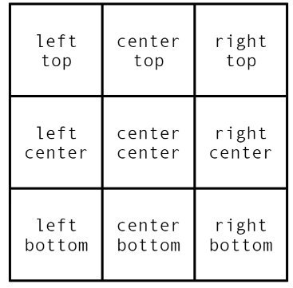

Teste de imagem de fundo
Background-image
Podemos colocar imagens de fundo com background-image, possui varías prorpiedades, como por exemplo, linear-gradient que cria um gradiente, mas para adicionar imagens basta colocar "url()" e colocar o local do arquivo, ou até mesmo imagens externas de outro site, basta colocar a url. É bom salientar que isso não faz parte do conteúdo (HTML) do seu site, é meramente estilo (CSS).
Podemos observar no quadrado 1 e quadrado 2 uma divisão na imagem, isso porque a imagem é muita pequena, isto é, o tamanho da caixa é maior do que a imagem, por padrão a imagem será repetida para cobrir o tamanho da caixa contêiner. Se a imagem for grande, a imagem não aparece totalmente (quadrado 3), isto é, a imagem é maior do que a caixa contêiner, e por sua vez, não será repetida. Podemos configurar isso com background-repeat, mas veremos isso no próximo tópico.
Baclground-repeat
Como vimos anteriormente, as imagens pequenas que não ocupam toda a caixa se repete em ambos os eixos x e y, podemos alterar isso. Alguns valores são: background-repeat: repeat (padrão), background-repeat: no-repeat (não significa que não se repete, repete apenas uma vez, não obriga ao navegador a aumentar o tamanho da imagem para caber na caixa), background-repeat: repeat-x (repete apenas no eixo x), background-repeat: repeat-y (repete apenas no eixo y).
Como podemos observar, o ponto de partida ou ponto de refêrencia é sempre no canto superior esquerdo, podemos mudar isso também com Baclground-position.
background-position
Com baclground-position podemos alterar o ponto de partida do início da repetição. Temos como valores: left top (padrão), center top, right top, left center, center center, right center, left bottom, center bottm e right bottom.
Bem, é quase como se fosse uma matriz.
Exemplos:
background-position: left center;
background-position: left bottom;
background-position: right top;
background-position: right center;
background-position: center center;
Mesclando background-repeat e background-position
Aqui está uma imagem, que podemos ver que a imagem é mais pequena do que a caixa, parece até uma ilusão de ótica.
Se colocarmos background-repeat: no-repeat e baclground-position: center center, podemos centralizar uma imagem só.